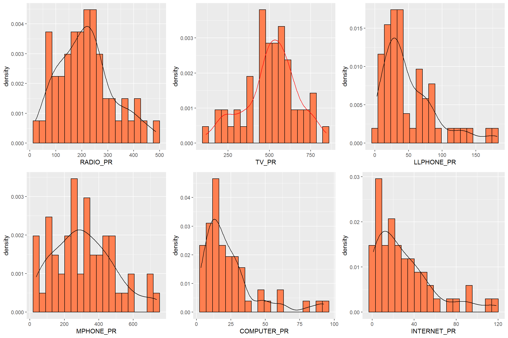
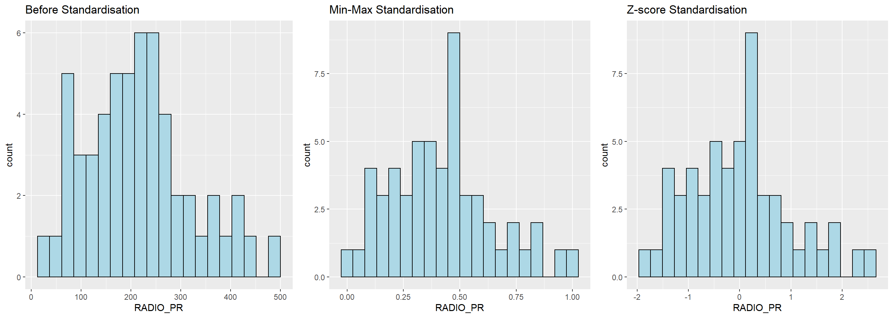

Loading packages
pacman::p_load(rgdal, spdep, tmap, sf,
ggpubr, cluster, factoextra, NbClust,
heatmaply, corrplot, psych, tidyverse, purrr,ClustGeo)In today’s class exercise, lets see how to apply Spatially constrained clustering algorithm - ClustGeo Method to delineate homogeneous region of Vietnam.
Following two data sets are used:
Myanmar Township Boundary Data (i.e. myanmar_township_boundaries) : This is a GIS data in ESRI shapefile format. It consists of township boundary information of Myanmar. The spatial data are captured in polygon features.
Shan-ICT.csv: This is an extract of The 2014 Myanmar Population and Housing Census Myanmar at the township level.
p_load function pf pacman package is used to install and load sf all necessary packages into R environment.
sf, rgdal and spdep - Spatial data handling
tidyverse, especially readr, ggplot2 and dplyr - Attribute data handling
tmap -Choropleth mapping
coorplot, ggpubr, and heatmaply - Multivariate data visualisation and analysis
cluster, ClustGeo - Cluster analysis
The code chunk below installs and launches these R packages into R environment.
pacman::p_load(rgdal, spdep, tmap, sf,
ggpubr, cluster, factoextra, NbClust,
heatmaply, corrplot, psych, tidyverse, purrr,ClustGeo)The Myanmar Township Boundary GIS data is in ESRI shapefile format. It is imported into R environment by using the st_read() function of sf. The imported InfoComm variables are extracted from The 2014 Myanmar Population and Housing Census Myanmar. The attribute data set is called ict. It is saved in R’s tibble data.frame format.
shan_sf <- st_read(dsn = "data3/geospatial",
layer = "myanmar_township_boundaries") %>%
filter(ST %in% c("Shan (East)", "Shan (North)", "Shan (South)"))Reading layer `myanmar_township_boundaries' from data source
`D:\raveenaclr\Geospatial Analytics\InClass_Ex\data3\geospatial'
using driver `ESRI Shapefile'
Simple feature collection with 330 features and 14 fields
Geometry type: MULTIPOLYGON
Dimension: XY
Bounding box: xmin: 92.17275 ymin: 9.671252 xmax: 101.1699 ymax: 28.54554
Geodetic CRS: WGS 84ict <- read_csv ("data3/aspatial/Shan-ICT.csv")It is wiser to take proportion of no. of households present instead of using the numbers directly. So, let us preprocess the data accordingly by using the code chunk below:
ict_derived <- ict %>%
mutate(`RADIO_PR` = `Radio`/`Total households`*1000) %>%
mutate(`TV_PR` = `Television`/`Total households`*1000) %>%
mutate(`LLPHONE_PR` = `Land line phone`/`Total households`*1000) %>%
mutate(`MPHONE_PR` = `Mobile phone`/`Total households`*1000) %>%
mutate(`COMPUTER_PR` = `Computer`/`Total households`*1000) %>%
mutate(`INTERNET_PR` = `Internet at home`/`Total households`*1000) %>%
rename(`DT_PCODE` =`District Pcode`,`DT`=`District Name`,
`TS_PCODE`=`Township Pcode`, `TS`=`Township Name`,
`TT_HOUSEHOLDS`=`Total households`,
`RADIO`=`Radio`, `TV`=`Television`,
`LLPHONE`=`Land line phone`, `MPHONE`=`Mobile phone`,
`COMPUTER`=`Computer`, `INTERNET`=`Internet at home`) radio <- ggplot(data=ict_derived,
aes(x= `RADIO_PR`,
y= ..density..)) +
geom_histogram(bins=20,
color="black",
fill="coral")+
geom_density(color="black",
alpha = 0.2)
tv <- ggplot(data=ict_derived,
aes(x= `TV_PR`,
y= ..density..)) +
geom_histogram(bins=20,
color="black",
fill="coral")+
geom_density(color="red",
alpha = 0.2)
llphone <- ggplot(data=ict_derived,
aes(x= `LLPHONE_PR`,
y= ..density..)) +
geom_histogram(bins=20,
color="black",
fill="coral")+
geom_density(color="black",
alpha = 0.2)
mphone <- ggplot(data=ict_derived,
aes(x= `MPHONE_PR`,
y= ..density..)) +
geom_histogram(bins=20,
color="black",
fill="coral")+
geom_density(color="black",
alpha = 0.2)
computer <- ggplot(data=ict_derived,
aes(x= `COMPUTER_PR`,
y= ..density..)) +
geom_histogram(bins=20,
color="black",
fill="coral")+
geom_density(color="black",
alpha = 0.2)
internet <- ggplot(data=ict_derived,
aes(x= `INTERNET_PR`,
y= ..density..)) +
geom_histogram(bins=20,
color="black",
fill="coral")+
geom_density(color="black",
alpha = 0.)
ggarrange(radio, tv, llphone, mphone, computer, internet,
ncol = 3,
nrow = 2)
Before we perform cluster analysis, it is important for us to ensure that the cluster variables are not highly correlated.
In this section, you will learn how to use corrplot.mixed() function of corrplot package to visualise and analyse the correlation of the input variables.
cluster_vars.cor = cor(ict_derived[,12:17])
corrplot.mixed(cluster_vars.cor,
lower = "ellipse",
upper = "number",
tl.pos = "lt",
diag = "l",
tl.col = "black")
Before we visualise the maps using choropleth, let us first combine both geospatial and aspatial datsets into one simple feature dataframe using the code chunk below.
shan_sf <- left_join(shan_sf,
ict_derived,
by=c("TS_PCODE"="TS_PCODE"))Now let us perform hierarchical cluster analysis. The analysis consists of four major steps:
Extracting clustering variables
Data standardisation
Visualising the clustering variables
Computing Proximity Matrix
Extracting clustering variables
cluster_vars <- shan_sf %>%
st_set_geometry(NULL) %>%
select("TS.x", "RADIO_PR", "TV_PR", "LLPHONE_PR", "MPHONE_PR", "COMPUTER_PR")
head(cluster_vars,10) TS.x RADIO_PR TV_PR LLPHONE_PR MPHONE_PR COMPUTER_PR
1 Mongmit 286.1852 554.1313 35.30618 260.6944 12.15939
2 Pindaya 417.4647 505.1300 19.83584 162.3917 12.88190
3 Ywangan 484.5215 260.5734 11.93591 120.2856 4.41465
4 Pinlaung 231.6499 541.7189 28.54454 249.4903 13.76255
5 Mabein 449.4903 708.6423 72.75255 392.6089 16.45042
6 Kalaw 280.7624 611.6204 42.06478 408.7951 29.63160
7 Pekon 318.6118 535.8494 39.83270 214.8476 18.97032
8 Lawksawk 387.1017 630.0035 31.51366 320.5686 21.76677
9 Nawnghkio 349.3359 547.9456 38.44960 323.0201 15.76465
10 Kyaukme 210.9548 601.1773 39.58267 372.4930 30.94709Now let us rename the township name instead of row number and delete the old one using the code chunk below
row.names(cluster_vars) <- cluster_vars$"TS.x"
shan_ict <- select(cluster_vars, c(2:6))
head(shan_ict, 10) RADIO_PR TV_PR LLPHONE_PR MPHONE_PR COMPUTER_PR
Mongmit 286.1852 554.1313 35.30618 260.6944 12.15939
Pindaya 417.4647 505.1300 19.83584 162.3917 12.88190
Ywangan 484.5215 260.5734 11.93591 120.2856 4.41465
Pinlaung 231.6499 541.7189 28.54454 249.4903 13.76255
Mabein 449.4903 708.6423 72.75255 392.6089 16.45042
Kalaw 280.7624 611.6204 42.06478 408.7951 29.63160
Pekon 318.6118 535.8494 39.83270 214.8476 18.97032
Lawksawk 387.1017 630.0035 31.51366 320.5686 21.76677
Nawnghkio 349.3359 547.9456 38.44960 323.0201 15.76465
Kyaukme 210.9548 601.1773 39.58267 372.4930 30.94709Data Standardisation
In order to avoid the cluster analysis result is baised to clustering variables with large values, it is useful to standardise the input variables before performing cluster analysis.
Performing Min-Max standardisation
In the code chunk below, normalize() of heatmaply package is used to stadardisation the clustering variables by using Min-Max method. The summary() is then used to display the summary statistics of the standardised clustering variables.
shan_ict.std <- normalize(shan_ict)
summary(shan_ict.std) RADIO_PR TV_PR LLPHONE_PR MPHONE_PR
Min. :0.0000 Min. :0.0000 Min. :0.0000 Min. :0.0000
1st Qu.:0.2544 1st Qu.:0.4600 1st Qu.:0.1123 1st Qu.:0.2199
Median :0.4097 Median :0.5523 Median :0.1948 Median :0.3846
Mean :0.4199 Mean :0.5416 Mean :0.2703 Mean :0.3972
3rd Qu.:0.5330 3rd Qu.:0.6750 3rd Qu.:0.3746 3rd Qu.:0.5608
Max. :1.0000 Max. :1.0000 Max. :1.0000 Max. :1.0000
COMPUTER_PR
Min. :0.00000
1st Qu.:0.09598
Median :0.17607
Mean :0.23692
3rd Qu.:0.29868
Max. :1.00000 Performing Z-score standardisation
Z-score standardisation can be performed easily by using scale() of Base R. The code chunk below will be used to stadardisation the clustering variables by using Z-score method.
shan_ict.z <- scale(shan_ict)
describe(shan_ict.z) vars n mean sd median trimmed mad min max range skew kurtosis
RADIO_PR 1 55 0 1 -0.04 -0.06 0.94 -1.85 2.55 4.40 0.48 -0.27
TV_PR 2 55 0 1 0.05 0.04 0.78 -2.47 2.09 4.56 -0.38 -0.23
LLPHONE_PR 3 55 0 1 -0.33 -0.15 0.68 -1.19 3.20 4.39 1.37 1.49
MPHONE_PR 4 55 0 1 -0.05 -0.06 1.01 -1.58 2.40 3.98 0.48 -0.34
COMPUTER_PR 5 55 0 1 -0.26 -0.18 0.64 -1.03 3.31 4.34 1.80 2.96
se
RADIO_PR 0.13
TV_PR 0.13
LLPHONE_PR 0.13
MPHONE_PR 0.13
COMPUTER_PR 0.13We observe that mean and standard deviation of the Z-score standardised clustering variables are 0 and 1 respectively. We should take note that Z-score standardisation method should only be used if we would assume all variables come from some normal distribution.
Visualising the standardised clustering variables
Let us visualise the standardised clustering variables graphically in addition to summary statistics
r <- ggplot(data=ict_derived,
aes(x= `RADIO_PR`)) +
geom_histogram(bins=20,
color="black",
fill="light blue")+
ggtitle("Before Standardisation")
shan_ict_s_df <- as.data.frame(shan_ict.std)
s <- ggplot(data=shan_ict_s_df,
aes(x=`RADIO_PR`)) +
geom_histogram(bins=20,
color="black",
fill="light blue") +
ggtitle("Min-Max Standardisation")
shan_ict_z_df <- as.data.frame(shan_ict.z)
z <- ggplot(data=shan_ict_z_df,
aes(x=`RADIO_PR`)) +
geom_histogram(bins=20,
color="black",
fill="light blue") +
ggtitle("Z-score Standardisation")
ggarrange(r, s, z,
ncol = 3,
nrow = 1)
We can observe that after standardisation, the variables follow normal distribution.
Computing Proximity Matrix The code chunk below is used to compute the proximity matrix using euclidean method although the function dist() supports six distance proximity calculations, they are: euclidean, maximum, manhattan, canberra, binary and minkowski.
proxmat <- dist(shan_ict, method = 'euclidean')To perform non-spatially constrained hierarchical clustering, we only need to provide the function a dissimilarity matrix as shown in the code chunk below.
nongeo_cluster <- hclustgeo(proxmat)
plot(nongeo_cluster, cex = 0.5)
rect.hclust(nongeo_cluster,
k = 6,
border = 2:5)
Similarly, we can plot the clusters on a categorical area shaded map by using the steps we learned in 5.7.12 Mapping the clusters formed.
groups <- as.factor(cutree(nongeo_cluster, k=6))
shan_sf_ngeo_cluster <- cbind(shan_sf, as.matrix(groups)) %>%
rename(`CLUSTER` = `as.matrix.groups.`)
qtm(shan_sf_ngeo_cluster, "CLUSTER")
Before we can performed spatially constrained hierarchical clustering, a spatial distance matrix will be derived by using st_distance() of sf package.
dist <- st_distance(shan_sf, shan_sf)
distmat <- as.dist(dist)
cr <- choicealpha(proxmat, distmat, range.alpha = seq(0, 1, 0.1), K=6, graph = TRUE)

With reference to the graphs above, alpha = 0.3 will be used as shown in the code chunk below
clustG <- hclustgeo(proxmat, distmat, alpha = 0.3)
groups <- as.factor(cutree(clustG, k=6))
shan_sf_Gcluster <- cbind(shan_sf, as.matrix(groups)) %>%
rename(`CLUSTER` = `as.matrix.groups.`)
qtm(shan_sf_Gcluster, "CLUSTER")